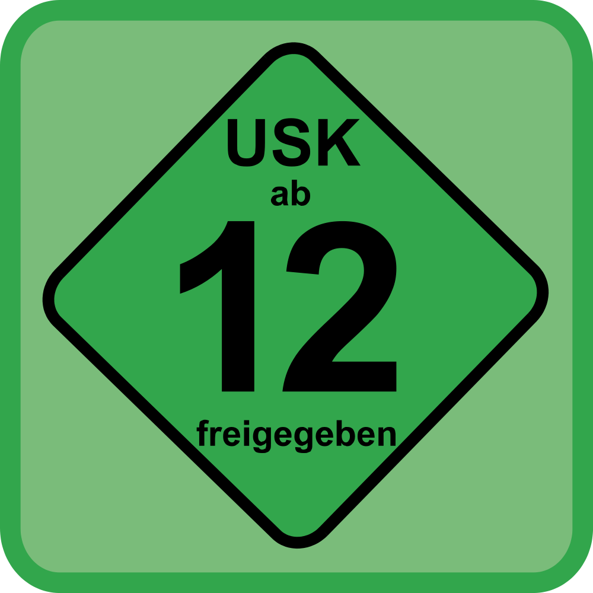
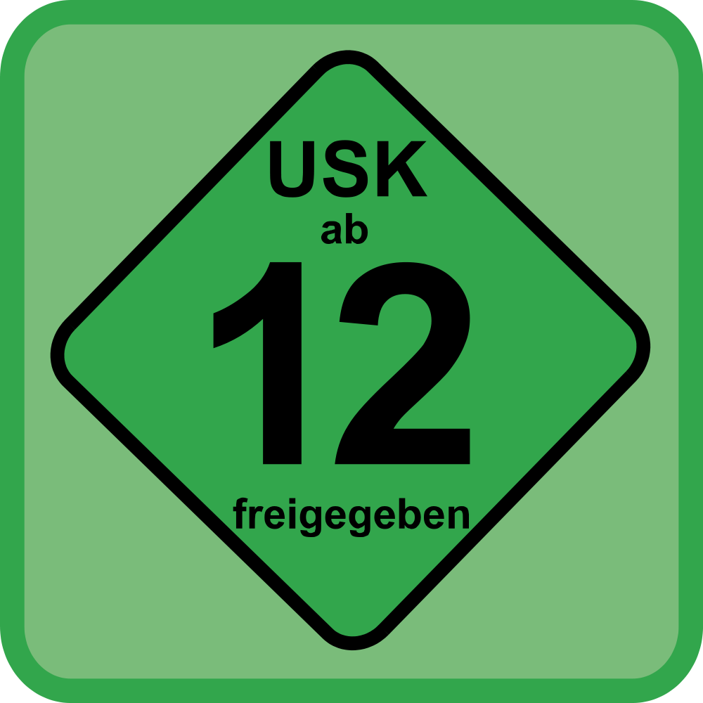
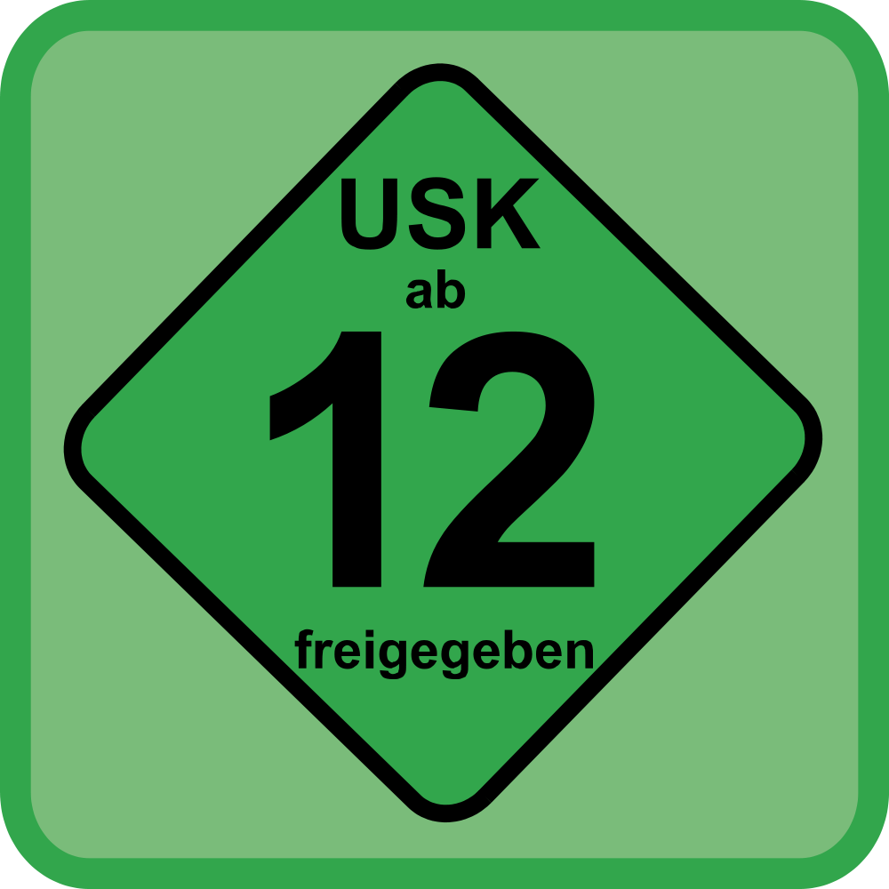

Aquí encontrarás toda la información sobre las actualizaciones mas recientes del juego.
Esta vez tenemos una versión ligera en la que nos enfocaremos en ajustes a los campeones (en la versión 11.13 tendremos un gran trabajo de sistemas). Esto significa que le pondremos atención a Aphelios y a algunas de sus combinaciones de armas menos populares; además, haremos debilitaciones a casos especiales en la escena profesional (Renekton, Kai’Sa). Luego, el centro de atención será el favorito de todos, el incuestionablemente confiable, el doctor morado por definición. Tal vez su apariencia parezca renovada, pero no sabemos si se puede esperar lo mismo de sus pacientes.
Entra AQUI para ver toda la información - Hace 2 semanas
En estas notas, recordaremos cambios que realizamos al inicio de la temporada y veremos si ya pasó la tormenta. Esto incluye contener a Morgana de la jungla, cuya mejora de la última versión funcionó demasiado bien y la apartó de sus roles principales. Además, le daremos un poco de amor a Ryze, quien ha estado triste desde los cambios a objetos (aunque en general tiene un semblante triste). También ajustamos a dos campeones que suelen encontrarse con dos objetos, en especial Senna con Guantelete de Fuego Escarchado y Maestro Yi con Hoja Crepuscular. No queremos que un campeón se sienta condicionado a cierto objeto o incentivar una jugabilidad que se sienta fuera de lugar, así que estos cambios deberían generar más opciones de míticos y a la vez, afinar sus identidades y estilos de juego.
Entra AQUI para ver toda la información - Hace 4 semanas
Ahora que las cosas se están asentando después de la mitad de temporada, estamos aquí con la mejor parte de esta versión: ¡una actualización a la jungla! Hay una gran sección que pueden revisar, pero la esencia de esto es que estamos haciendo mejoras para ayudar a que la experiencia de la jungla parezca menos una rutina de despejar campamentos de aves y lobos. Hablamos de temporizadores de campamentos más indulgentes, una ayuda para los jungleros que están muy atrasados en la partida y ajustes específicos a los campamentos de la jungla. Retomando los cambios de balance, cierto hombre con hachas y una chica con una cuchilla han estado cruzando el límite, por lo que los debilitaremos un poco. Por otra parte, le daremos un poco de amor a una dama luminosa y a una mujer de apoyo que no han estado en su mejor momento. Fase Veloz, una apuesta segura para los campeones a distancia y cuerpo a cuerpo, recibe una debilitación, mientras que Máscara Abisal recibe una mejora para garantizar que sea una opción de resistencia mágica más potente.
Entra AQUI para ver toda la información - El mes pasado
Esta versión es un tanto abrumadora, por lo que aquí está un resumen. Primero, tenemos un cambio para el sistema de tanques con la debilitación a Quimotanque Turbo y las mejoras a algunos objetos para luchadores demasiado débiles (Danza de la Muerte y Al Filo de la Cordura). Después, durante los preparativos para el MSI, incluiremos una tripulación variada en la competencia para reestructurar el metajuego para la escena profesional. Esto hará que nombres dominantes, como Gragas, tomen un descanso, y antiguos amigos, como Shen y Lulu, sean el centro de atención por un tiempo. Luego, en la última versión se nos colaron algunos campeones que crecieron rápidamente para convertirse en infractores principales de la Grieta. Pondremos en su lugar a campeonas como Diana y Morgana, cuyo poder nuevo las ayudo a posicionarse cómodamente en la jungla, pero conservaremos su fuerza en el rol. Aplicaremos lo mismo para cierto segador rojo y una bola de carne magenta en sus respectivos carriles.
Entra AQUI para ver toda la información - Hace 2 meses
Esta versión tiene algo para todos. Si buscan algo de vanguardia, tenemos los recortes de Gwen abriéndose camino hacia la Grieta. ¿Se aburrieron de las ondas galácticas de la versión pasada? Rammus viene con unos retoques y un pulido de su fiel caparazón blindado. ¿Ya hicieron la limpieza de primavera y necesitan algo brillante? Perfecto, porque ajustamos algunos míticos para que pongan sus encantadoras manos en ellos. O tal vez hayan echado de menos jugar con algunos campeones en sus viejos carriles de confianza, como cierto médico muy acreditado y muy púrpura, o tal vez incluso un yordle en llamas. Parece que tendrán que seguir leyendo para averiguarlo. ¡Nos vemos en las siguientes notas!
Entra AQUI para ver toda la información - Hace 2 meses
Primero iremos al Fréljord para ponernos cómodos con algunos compañeros congelados (Ashe, Braum y Lissandra). Luego nos dirigiremos a la Ciudad de Bandle para bajarle al reproductor de Tristana y pasarle el micrófono a Teemo, porque a todos nos viene bien un poco de terror de vez en cuando. Incluso hicimos el viaje lúgubre a las Islas de la Sombra para levantar el ánimo de Yorick (¿quién hubiera imaginado que es un gran fan de la música soul?) y darle un poco de atención pendiente desde hace tiempo. Y nuestra última parada fue el carril inferior, donde ajustamos las perillas de tres soportes que han estado silenciando a sus compañeros. Agregamos algunos cambios a los objetos y ¡esto es lo esencial de esta versión! Diríjanse a la Grieta y ¡nos vemos en la próxima!
Entra AQUI para ver toda la información - Hace 3 meses
